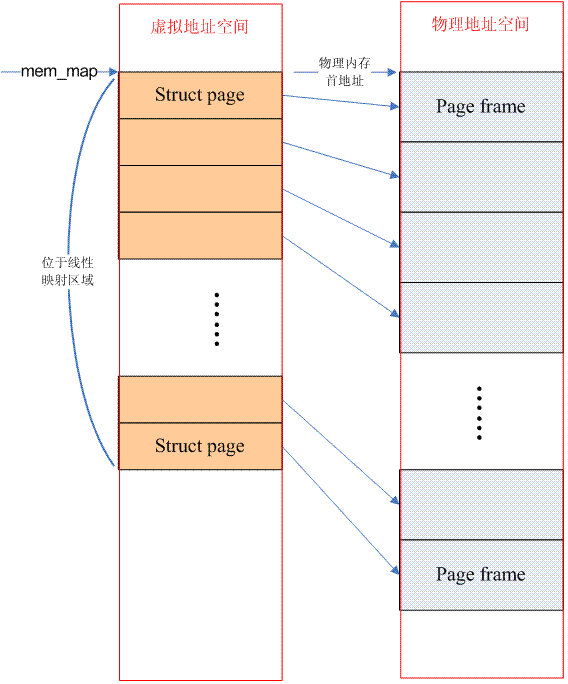
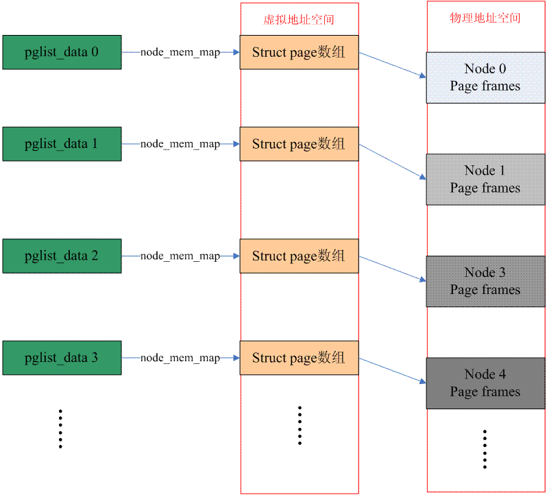
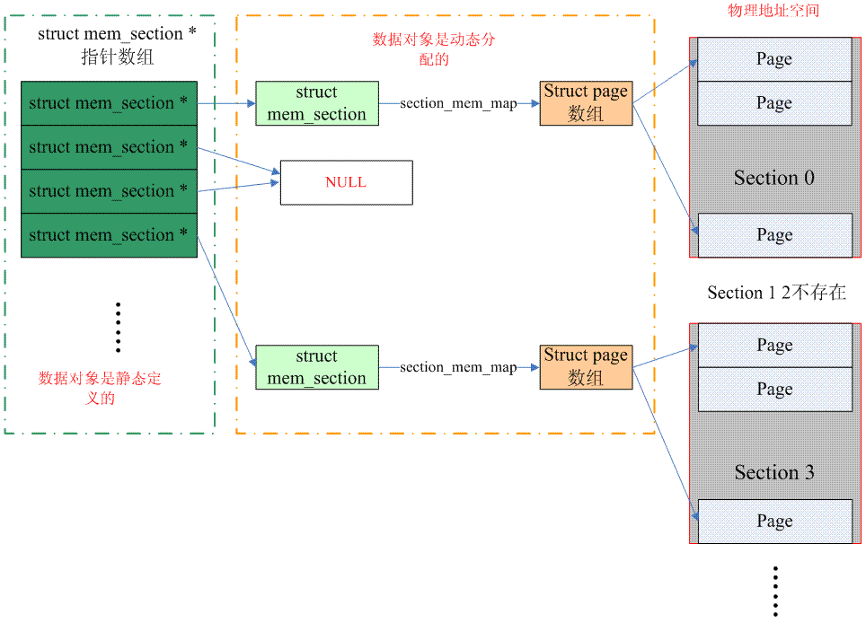
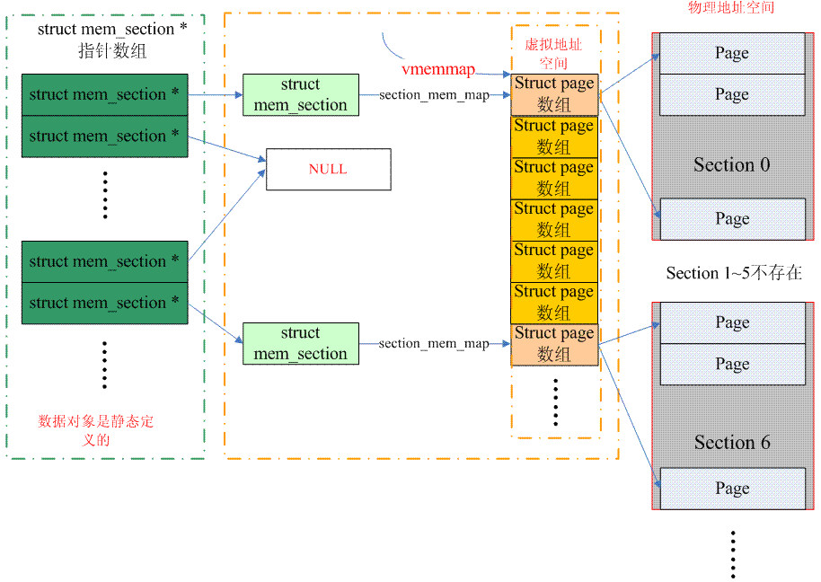

Linux内核中有三种内存模型：FLAT memory model， Discontiguous Memory Model，Sparse Memory Model
1. FLAT memory model
CPU访问物理地址空间时， 物理地址空间是连续的地址空间。每个物理页帧都是由struct page来管理的，连续的物理地址空间就由连续的page数组来管理。
.
## 2. Discontiguous Memory Model
CPU访问物理内存时，地址是不连续的。在理解这种内存模型之前，先来看看NUMA架构，NUMA（Non-uniform memory access）是指多处理器在访问内存时，对某个内存地址的访问是和该memory与processor之间的相对位置有关。Discontiguous memory本质上是flat memory内存模型的扩展。
.
因此，这种内存模型下，节点数据（struct pglist_data）有多个，宏定义NODE_DATA可以得到指定节点的struct pglist_data。而，每个节点管理的物理内存保存在struct pglist_data 数据结构的node_mem_map成员中（概念类似flat memory中的mem_map）。这时候，从PFN转换到具体的struct page会稍微复杂一点，我们首先要从PFN得到node ID，然后根据这个ID找到对于的pglist_data 数据结构，也就找到了对应的page数组，之后的方法就类似flat memory了。
3. Sparse Memory Model
Memory model也是一个演进过程，刚开始的时候，使用flat memory去抽象一个连续的内存地址空间（mem_maps[]），出现NUMA之后，整个不连续的内存空间被分成若干个node，每个node上是连续的内存地址空间，也就是说，原来的单一的一个mem_maps[]变成了若干个mem_maps[]了。一切看起来已经完美了，但是memory hotplug的出现让原来完美的设计变得不完美了，因为即便是一个node中的mem_maps[]也有可能是不连续了。其实，在出现了sparse memory之后，Discontiguous memory内存模型已经不是那么重要了，按理说sparse memory最终可以替代Discontiguous memory的，这个替代过程正在进行中，4.4的内核仍然是有3中内存模型可以选择。
为什么说sparse memory最终可以替代Discontiguous memory呢？实际上在sparse memory内存模型下，连续的地址空间按照SECTION（例如1G）被分成了一段一段的，其中每一section都是hotplug的，因此sparse memory下，内存地址空间可以被切分的更细，支持更离散的Discontiguous memory。此外，在sparse memory没有出现之前，NUMA和Discontiguous memory总是剪不断，理还乱的关系：NUMA并没有规定其内存的连续性，而Discontiguous memory系统也并非一定是NUMA系统，但是这两种配置都是multi node的。有了sparse memory之后，我们终于可以把内存的连续性和NUMA的概念剥离开来：一个NUMA系统可以是flat memory，也可以是sparse memory，而一个sparse memory系统可以是NUMA，也可以是UMA的。
下面的图片说明了sparse memory是如何管理page frame的（配置了SPARSEMEM_EXTREME）：
.
（注意：上图中的一个mem_section指针应该指向一个page，而一个page中有若干个struct mem_section数据单元）
整个连续的物理地址空间是按照一个section一个section来切断的，每一个section内部，其memory是连续的（即符合flat memory的特点），因此，mem_map的page数组依附于section结构（struct mem_section）而不是node结构了（struct pglist_data）。当然，无论哪一种memory model，都需要处理PFN和page之间的对应关系，只不过sparse memory多了一个section的概念，让转换变成了PFN<—>Section<—>page。
我们首先看看如何从PFN到page结构的转换：kernel中静态定义了一个mem_section的指针数组，一个section中往往包括多个page，因此需要通过右移将PFN转换成section number，用section number做为index在mem_section指针数组可以找到该PFN对应的section数据结构。找到section之后，沿着其section_mem_map就可以找到对应的page数据结构。顺便一提的是，在开始的时候，sparse memory使用了一维的memory_section数组（不是指针数组），这样的实现对于特别稀疏（CONFIG_SPARSEMEM_EXTREME）的系统非常浪费内存。此外，保存指针对hotplug的支持是比较方便的，指针等于NULL就意味着该section不存在。上面的图片描述的是一维mem_section指针数组的情况（配置了SPARSEMEM_EXTREME），对于非SPARSEMEM_EXTREME配置，概念是类似的，具体操作大家可以自行阅读代码。
从page到PFN稍微有一点麻烦，实际上PFN分成两个部分：一部分是section index，另外一个部分是page在该section的偏移。我们需要首先从page得到section index，也就得到对应的memory_section，知道了memory_section也就知道该page在section_mem_map，也就知道了page在该section的偏移，最后可以合成PFN。对于page到section index的转换，sparse memory有2种方案，我们先看看经典的方案，也就是保存在page->flags中（配置了SECTION_IN_PAGE_FLAGS）。这种方法的最大的问题是page->flags中的bit数目不一定够用，因为这个flag中承载了太多的信息，各种page flag，node id，zone id现在又增加一个section id，在不同的architecture中无法实现一致性的算法，有没有一种通用的算法呢？这就是CONFIG_SPARSEMEM_VMEMMAP。具体的算法可以参考下图：
.